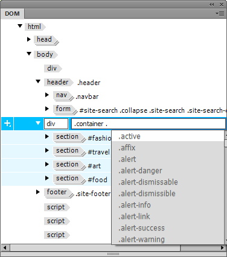

DOM panel enhancements
The DOM panel renders an interactive HTML tree for static and dynamic content. This view helps you visually map elements in Live View with their HTML markup and the applied selectors in CSS Designer. You can also make edits to the HTML structure in the DOM panel and see the changes take effect instantly in Live View.

You can now edit tags, classes, and IDs by double-clicking them in the DOM panel. You can also add additional classes or IDs by separating them with a space. For tags that are not associated with a class or ID, you can type the name of the class or ID after double-clicking the tag.
Visual Media Query enhancements
Visual Media Query bars are a visual representation of the media queries present in a page. These bars help you visualize your web page at different breakpoints and how different components of your web page reflow in different viewports. While you view your page in different viewports, you can make design changes that are specific to a viewport without affecting the page design in other viewports.

You will now be able to select a unit - px, em, or rem - while adding media queries using the Visual Media Query bar. When you specify a value in one unit, and then change the unit, the value is automatically converted to the newly selected unit.
Bootstrap enhancements
Whether you create a Bootstrap document from the New Document dialog box or from starter templates, the workflow is now seamless. No dialog boxes - Copy Dependent Files and Overwrite Existing Files - are displayed as in previous versions of Dreamweaver. When you create and save a Bootstrap document in a specific location, the dependent files too are automatically saved in the same location.
The Bootstrap Components option in the Insert panel lists all the Bootstrap components that you can add to your web page in Dreamweaver.
The Quick Property Inspector for images now includes options to customize images in Bootstrap documents.